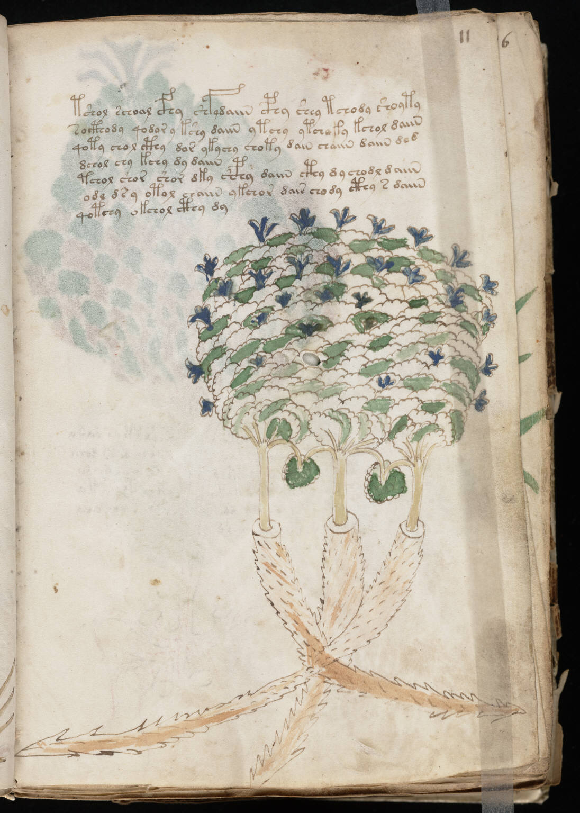

f11r
1tshol schoal cfhy shfydaiin cphy shey tchody shoyty2socthody qodor y kshy daiin ytchy ytchoky kchol daiin3qoty chol cthy dor ykychy choty dain chaiin daiin ded4dchol chy kchy dy daiin5tchol shor shor dky shcphy daiin cthy dy chodl daiin6odl ds y otol chaiin ykchor dair chody cthy s daiin7qotchy okchol cthy dy
